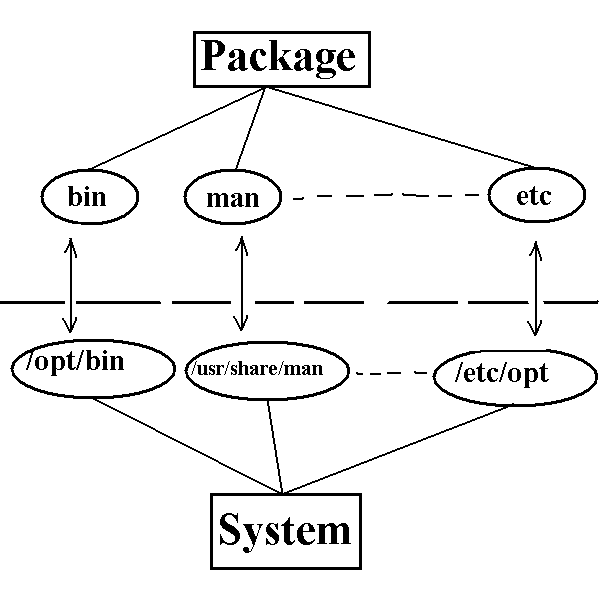

![[ TABLE OF CONTENTS ]](../gx/indexnew.gif)
![[ FRONT PAGE ]](../gx/homenew.gif)

![[ Linux Gazette FAQ ]](./../gx/dennis/faq.gif)

The spread of the Internet at the start of this decade had a profound impact on the development of free software. Suddenly, because of free software a large number of people could start collaborating on developing large software projects without being in large universities or corporations. Though mailing-lists and FTP sites, a large number of people could start using their free/fun/project's time to build programs that would be too much for any single person alone. Fundamentally, the Internet is a new production technology that has made software production cheaper just as the sewing machine made clothes production cheaper.
Today, free software has grown to become a complete system starting with a very high-quality kernel (Linux and others) to some of the best user applications. In fact, not only do we have free programs to do the job of most commercial applications; in many cases, we have more than one free project with very similar functions (i.e., different philosophies or scopes). This free, complete and high-quality system was bound to attract the attention of companies. Not only because Linux and other free software were growing into a large market but also it was in direct competition (and in many cases beating) their own products. Companies need to sell programs for this platform and need to figure out a way of competing with this new way of making software.
The huge growth in the use of Linux and free software has triggered a great increase in the number of commercial and non-commercial developers; this is leading to an ever-increasing rate of growth and innovation. In the midst of all of this great evolution, I see a number of factors that may end up hurting Linux and other free software in the long run. Here are some of them:
There seems to be a certain amount of intolerance towards software produced by people with different beliefs regarding free software in general and towards commercial software in particular. This, in my judgment, is quite dangerous since commercial software is one of the best sources of innovation in software, simply because commercial people can dedicate themselves to it. Software can't always be given freely since companies have to make money to cover costs. Also, sometimes it would be disastrous for companies to give their programs for free, e.g., drivers for hardware that cost millions in R&D could give many hardware secrets to competitors. The biggest problem with commercial software is not that it is commercial, but that monopolies sometimes arise stopping competition and reducing the quality of the software. If free and commercial software can find a way to co-exist, it would mean we could all enjoy the best of both worlds. A similar type of intolerance exists toward programs that are written with different licenses; this is too bad, since the best feature of free software is the freedom to choose.
Linux (and UNIX in general) was extremely well-designed for the needs of the people of its time. With the change of requirements of users and applications, change is continuously required. Linux has done better than other UNIX systems in dealing with this change, e.g., the FHS (File Hierarchy Standard) is much more in touch with user requirements than many commercial UNIX systems. There is still room for improvement, in my opinion. The important thing to remember is that change has to be emphasized and standards should be there to facilitate change by providing a common working ground, not by hindering it.
With all the pushing for making Linux easier to use, a number of programs try to imitate other operating systems by having the computer do the computer managing with the user just watching without knowing what is actually happening. This lack of understanding or distinction between the different parts of the system prevents the user from using the different parts in new and creative ways. In fact, this flexibility is one of the best features of Linux. This doesn't mean that graphical interfaces are not required--quite to the contrary, I think we are in desperate need of properly designed ones--it just means that it should be thought out. It should reflect the way a typical Linux system is put together and at the same time have room to grow as different components are added in the future.
There are a number of strategies I feel free software should adopt. Most of these are extensions of things people have already been doing.
This is one of the most vital requirements for development on the Internet since it allows many people to collaborate on programs that will run on common platforms. Free software always had a long heritage of being very standard compliant. For Example, Linux has been POSIX compliant from the start. There are also free implementations of NFS (for networking), X (for windowing), OpenGL (for 3D graphics) and many others. In light of this heritage, it is truly disturbing to read things like ``requires Red Hat Linux'' (even though I think it is one of the best distributions). Open standards for both software and hardware components should be published and maintained. I would suggest that a standard (``Linux 2000'' would be a nice name) be established that defines everything a hardware or software developer would need to guarantee that his program or the driver would work on any system that is complaint. This standard should not only include things like FHS but also standard packages would be needed. It is very important to realize that distributors and manufacturers will push for open standards, if they are not published and maintained by the Free Software community, and in that case, the control will not be in the hands of the community.
The idea is to build the system from separate components with clear boundaries between them such that you can always plug components into the system and not have to rely on a single source for anything. This can be achieved by insisting on standards for how different components integrate into the system and by separating application-specific configuration files from application-neutral data, so that competing applications or services can use the same information. The ultimate goal of componentization should be to make free software the backbone of everything. When thinking about free software, Richard Stallman suggests thinking ``free speech, not free beer'' as an extension to that I would suggest thinking of free software as ``free air'', it is everywhere and everyone needs it.
As an example of how the ideas I suggested in the last section can be applied, I decided to put together my own desktop Linux system using them. I tried to make my system as standard compliant as possible, but also to include all the ``luxuries'' of a complete desktop system (this included man pages, X, KDE, a number of languages and many other things).
My system uses one large (500MB+) file as its root file system and another file (64MB) for swap. It boots off a small temporary RAM disk and mounts the root file system and the swap through the loopback device (/dev/loop0 ). One advantage of this setup is that it is very easy to install on different computers since it's just a matter of copying one directory to the new machine.
The root disk was made bootable by copying some files from the /bin, /sbin and the /lib, as well as creating and tweaking some files and directories in /etc. Now that the system was booting, I needed to compile the other components of the system. As a first step I needed a compiler, so I copied gcc 2.7.2.3 and compiled egcs 1.1.1 and installed it. The various other components of the system were then compiled and installed starting from the basic (X, common libraries and utilities) and then progressing to applications (KDE, xv, GNUStep, Kaffe, etc.).
By examining the file-system structure, you can clearly see the way I tried to implement some of the ideas in the previous paragraphs. Although it is almost fully FHS 2.0 compliant, a number of features make it distinctively different. To begin with, files in the /usr hierarchy are severely restricted. Only 3 main file types are in /usr, The first are the binaries expected to be in any modern UNIX (e.g., head, telnet, ftp, etc. The second group of files are programs or libraries required by many other programs or needing special root access to install properly. This category contains various libraries in /usr/lib and /usr/local/lib and X in /usr/X11R6. Finally, architecture-independent, shared data files are stored in /usr/share as is recommended by the FHS. The emphasis in my system is that the share directory should be a place where programs can share data between different applications on the same system; hence, most files are symbolic links to the data in the program's home directory.
Another major feature of the system is the modification of the structure of /etc. Instead of the current practice of having all the files in one flat directory, a number of trees have been added. This is done to decrease the clutter and make the structure of the system more clear. For Example, /etc/man.conf is now stored in /etc/utils/man/man.conf while /etc/rc.d is now /etc/sys/init/rc.d with symbolic links are maintained to the old location of files for the sake of compatibility. As is required by the FHS, configuration files for programs in /opt can be stored in /etc/opt, but in addition, subdirectories to it exist for the same reasons given above. In my judgment, these small modifications to the /etc hierarchy can easily fulfill the requirement of a registry system for Linux with only a small modification to the way things are done.
In my system, most applications and programs live in the /opt directory or a subdirectory of it. For example, Kaffee (the free Java VM) is installed in /opt/languages/kaffe while KDE is installed in /opt/windows/kde. The thinking behind this is that all a package's files are stored in the directory designated for it in the /opt hierarchy and a number of well-defined points of contact are established between a package and the rest of the system including /opt/bin and /opt/bin, subdirectories of /usr/share, as well as a number of other directories.
Although this looks similar to the FHS the goal is totally different. In my system, a package has to have a symbolic link put in /opt/bin to all of it's public binaries for it to work from the command line. Likewise, proper symbolic links have to be set in /usr/share/man for the man pages of the package to work properly. This same principle applies to a number of other directories including /etc/opt for configuration files and /etc/sys/init/rc.d/init.d for packages that use the services of initd.

The figure schematically shows both the way the packages interface with the system as well as a specific examples. The reason for going to all of this trouble is to clarify, simplify and limit the points of contact between any packages, both programs and services like httpd, and to emphasis the breaking of the system into clearly defined components which can be isolated, added, removed or even replaced with other components easily.
The final major new feature of the system is the addition of the /lib/vendor directory. This is intended for kernel modules or other drivers available from vendors. The goal is to provide a standard place for vendors to put their drivers even if they are available in binary-only format. This should encourage vendors to write drivers for Linux and eventually give away the source code for that driver, when the hardware is not so cutting edge. Even if the source code is never released, replacing an existing driver is easier than writing something from scratch.
Linux and related utilities have been evolving steadily over the past few years and have grown to be an extremely robust and rich system. Standards have played a core role in this, and their evolution will be even more important if Linux is to continue increasing in popularity.
I have tried to highlight some points I think are absolutely essential for the continued success for Linux and Free Software in general. One major point is that as good as Linux is, it is not perfect and will have to be in a constant state of evolution. Nothing should be above change and the ultimate goal should always be speed, simplicity and elegance.
Another point I am arguing is that Linux standards should open up to companies and make it as easy as possible to add programs, services, or drivers into our system smoothly, even if they are not free. This will greatly aid in preventing any single company from monopolizing the system since other companies can make their own replacements for these components or free versions can be written.
In building my own system, I was trying to see what a system might look like when these ideas are applied. Whether Linux and Linux standards evolve to something similar to my system or not, I hope some of the concerns I raised in the article are considered and addressed by the Linux community.
Componentization for the operating system is closely related to commoditizing computers; Eric Green has a very nice discussion of both at http://www.linux-hw.com/~eric/commodity.html.